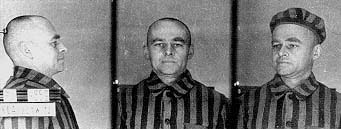

September 19th, 1940, Warsaw, Poland; during a Warsaw street roundup, Witold Pilecki is captured by German forces, along with 2000 other Polish civilians. Unlike the other unlucky souls captured by Nazi forces that day, he volunteered to be there.
Witold was born on May 13th, 1901, in the city of Olonets in the Russian Empire. Following the Russian Revolution of 1917, Pilecki returned to Wilno, where he joined a paramilitary group known as the Lithuanian and Belarusian Self-Defense Militia. Wilno eventually fell to Bolshevik forces on January 5th, 1919, and Pilecki and his forces had no choice but to retreat to Bialystok.
It was in Bialystok that Pilecki volunteered to join the newly formed Polish Volunteer Army. He fought in crucial battles during the Polish-Soviet War as part of a cavalry unit. Pilecki took part in the Vilna Offensive, where the Polish army liberated Wilno and its surrounding area from the Red Army.
In 1921, following the Polish-Soviet War, Pilecki was transferred to army reserves, promoted to the rank of corporal, and designated as a non-commissioned officer. Later that year, he completed his secondary education and went on to start at the Stefan Batory University, but he was forced to abandon his studies in 1924, due to his father's declining health. Pilecki went on to complete his officer training at the Cavalry Reserve Officers' Training School. After his graduation, he was assigned to the 26th Lancer Regiment with the rank of ensign. By the end of 1926, he was promoted to second lieutenant.
Pilecki spent much of his time after the first World war, working as a community leader and activist. In 1932, he helped establish a Cavalry training school in Lida, and shortly after was appointed commander of the 1st Lidsky Squadron. He held the position until 1937 when the unit was absorbed in the Polish 19th Infantry Division.
On September 1st, 1939, Germany launched an invasion of Poland. Pilecki was mobilized as a cavalry platoon commander and was assigned to the 19th Infantry Division. This unit fought heavily against German forces but was ultimately defeated and forced to withdraw. After the unit's withdrawal, they were incorporated into the 41st Infantry Division, where Pilecki served as divisional second-in-command. After the Germans captured Warsaw, the surviving Polish forces were forced into hiding.
While hiding from German forces, Pilecki and his commander formed the Secret Polish Army as a means to combat German rule.

Pilecki's Auschwitz prisoner picture Fair use, Link
Up to 1940, little was known about German concentration camps. Many believed these camps were simply prison or work camps. Very few realized these camps were slaughtering people, particularly Polish Jews, en masse. It was also in 1940 that Pilecki proposed his plan to enter the German concentration camp of Auschwitz. He planned to be taken as a prisoner, gather information, and organize inmate resistance. Under the identity "Tomasz Serafiński" he allowed himself to be captured during a street roundup on September 19th, 1940.
Upon his arrival in Auschwitz, he was designated inmate number 4859. During his time in the camp, he formed the Związek Organizacji Wojskowej, often referred to as ZOW, which acted as the Auschwitz branch of the Polish Home Army. ZOW focused on gathering intelligence, aiding in a possible invasion of the camp by Allied forces, and improving prisoner morale. By 1942 ZOW had over 1000 members. The members of ZOW managed to build a radio that they used to broadcast information to allied forces. The Gestapo eventually had a successful campaign to find and kill several members of ZOW.
On the night of April 26th, 1943, Pilecki was assigned to work in a camp bakery outside the fence. He and two comrades overpowered a guard, cut a telephone line, stole documents, and fled. He aimed to return to the Polish Home Army and convince them to mount an operation to liberate the camp.
On August 25th, 1943, Pilecki reached Warsaw and was attached to the Home Army's intelligence unit, known as Section II. While attempting to scout the area around Auschwitz, the Home Army lost several operatives, and as a result, decided their forces would not be strong enough to liberate the camp.
Pilecki's Report was the first detailed account of the atrocities from within the camp to make it to allied hands. His report detailed the gas chambers, mass crematoriums, and the other genocidal acts of the Nazi forces.
Due to the rising possibility of Soviet occupation within Poland, Pilecki was promoted to cavalry captain and joined an anti-communist group within the Home Army known as NIE.
The Warsaw Uprising started on August 1st, 1944 and Pilecki volunteered to join the Chrobry II Battalion. Initially, Pilecki kept his rank and identity from his superiors and served as a common soldier. However, many officers died during the conflict. Pilecki chose to reveal his identity to his superiors and assumed command of the unit under the assumed identity of Captain Roman. The uprising was ended through an agreement made between German and Polish military officials. The agreement ensured captured resistance fighters and civilians living within the occupied territory were treated humanely. Witold hid a cache of weapons then surrendered to German forces on October 5th, 1944. He was imprisoned in various prisoner-of-war camps until April 28th, 1945, when the camp was liberated by US forces.
The Soviets invaded Poland on September 17th, 1939, just 16 days after the Germans' invasion. Following the war, there was much dispute about where Poland's borders should lie and the Soviets annexed a large portion of Eastern Poland. On August 16th, 1945, the Polish government signed a treaty to formally cede the territory to the Soviet Union. However, many Poles were not happy with the treaty and attempted to resist Soviet rule.
In July of 1945, after Pilecki was liberated from the German POW camp in Murnau, he was reassigned to the intelligence division of the Polish II Corps. He then relocated to Warsaw and preceded to set up an intelligence-gathering network with contacts he met in Auschwitz and the Secret Polish Army. Pilecki frequently changed jobs and names to help maintain his cover, but he was eventually outed by the Ministry of Public Security, essentially the Polish secret police.
May 8th, 1947, agents from the Ministry of Public Security arrest, interrogate, and torture Pilecki. Soviet officials charged Pilecki with a whole slew of charges, including espionage and conspiracies to assassinate government officials. He was given a show trial on March 3rd, 1948, and was found guilty and sentenced to death. Along with 3 of his comrades, Pilecki was executed on May 25th, 1948, from a shot to the back of the head.
It wasn't until 1990, 42 years after his death, that he and the other victims of the show trial were absolved of their crimes. In 2006, he was awarded Poland's highest honor, the Order of the White Eagle. On September 6th, 2013, he was promoted to the rank of colonel.
To this day, Pilecki's exact grave location is still unknown, but it is believed to be somewhere within Powązki Cemetary.